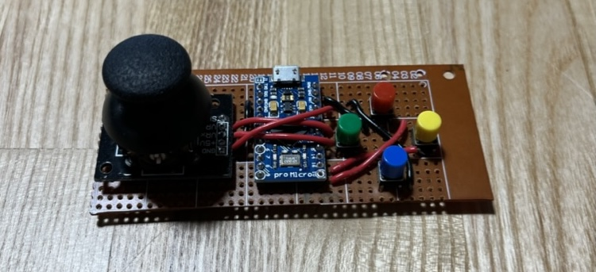
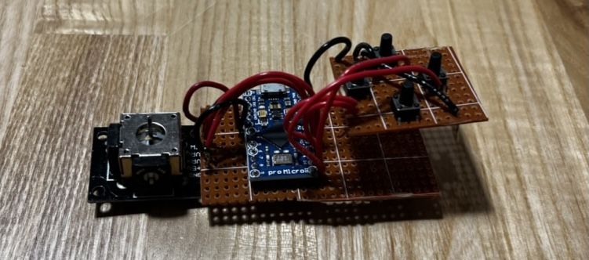
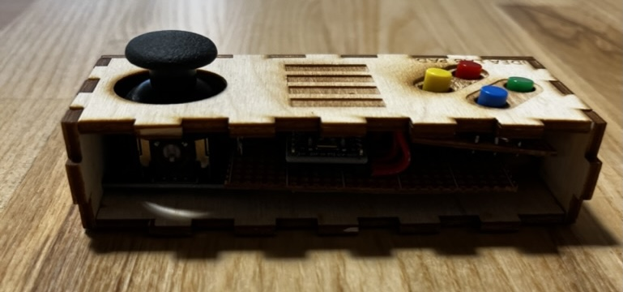
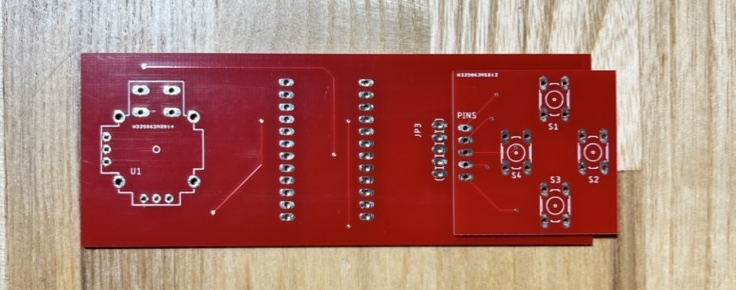
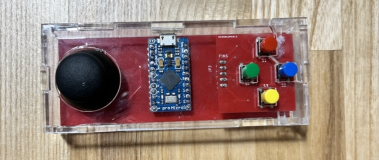
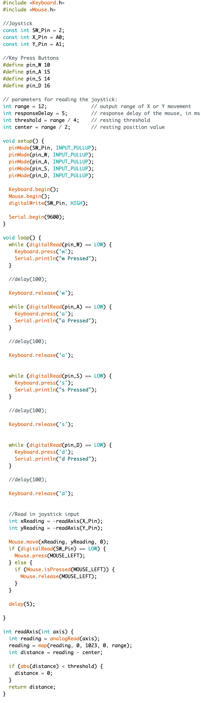

-
Prototypes
Prototype 1
This is an image of the first prototype of the gamepad. It used a stripboard, but the buttons were much lower than the joystick and we had to cut each wire and strip the wires to an appropriate length.
Prototype 2
Here we were able to improve on the position of the buttons. But doing so required the use of two strip boards and more wires. This was the product used for the first workshop. To prepare we had to custom cut and strip every wire for about 10 students and had to custom cut and strip the stripboards. The success rate was low since short circuiting the wires when soldering was very easy to do based on the layout. Overall this workshop did run smoothly.
  -
Final Product
Determined to improve on both the Arduino Gamepad itself and the workshop I began experimenting with custom PCBs. After creating various tests and running workshops with these PCBs, I felt confident in tackling the gamepad again. We created two PCBs, one for the Arduino and joystick and one for the buttons. We used extending header pins to attach the two PCBs. Overall this workshop ran extremely well and every student who came was able to successfully make their own Arduino Gamepad. The one snag was the wiring between the button of joystick button was incomplete, but once that was fixed we had a complete Arduino gamepad workshop that could be continuously run.
PCB Boards
Final Product
 -
Code
We needed to use a Pro Micro Arduino in order to use the buttons as keyboard keys, w, a, s, d, and to use the joystick as a mouse with the press of the joystick simulating a right click. We also needed two different libraries keyboard and mouse. Because we were using a custom PCB all the joystick values and button values for the Arduino were the same. This resulted in universal code that could be shared and flashed on the gamepads after assembly.
\Code
